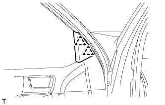
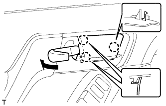
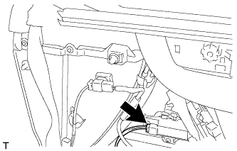
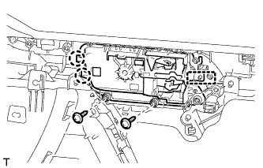
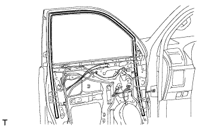

ПЕРЕДНЯЯ ДВЕРЬ > РАЗБОРКА |
| 1. ОТСОЕДИНИТЕ ПРОВОД ОТ ОТРИЦАТЕЛЬНОГО ВЫВОДА АККУМУЛЯТОРНОЙ БАТАРЕИ |
| 2. СНИМИТЕ ОБЛИЦОВКУ КРОНШТЕЙНА НИЖНЕЙ РАМЫ ЛЕВОЙ ПЕРЕДНЕЙ ДВЕРИ |
|  |
Отсоедините 2 фиксатора и снимите облицовку кронштейна нижней рамы левой передней двери.
| 3. СНИМИТЕ ДЕРЖАТЕЛЬ ВНУТРЕННЕЙ РУЧКИ ЛЕВОЙ ДВЕРИ № 2 |
|  |
С помощью съемника молдингов освободите 3 захвата и снимите оправу внутренней ручки, как показано на рисунке.
| 4. СНИМИТЕ ЛЕВУЮ НАКЛАДКУ ВЕРХНЕГО ПОРУЧНЯ |
 |
С помощью съемника молдингов А освободите 8 захватов и снимите крышку верхнего поручня.
| 5. СНИМИТЕ ПАНЕЛЬ ОБЛИЦОВКИ ПЕРЕДНЕЙ ЛЕВОЙ ДВЕРИ В СБОРЕ |
 |
Выверните 3 винта.
Снимите 12 фиксаторов.
 |
Вытяните панель облицовки передней двери в сборе в направлении, указанном стрелкой на рисунке.
| *1 | Базовый выступ |
Поднимите панель облицовки передней двери в сборе, чтобы освободить 4 захвата, и снимите панель облицовки передней двери в сборе вместе с внутренним уплотнителем стекла левой передней двери.
 |
Отсоедините 2 разъема.
Для моделей с запоминающими устройствами сидений:
|  |
Отсоедините разъемы.
 |
Отсоедините трос дистанционного управления замком передней двери в сборе и внутренний трос замка передней двери в сборе.
| 6. СНИМИТЕ ВНУТРЕННИЙ УПЛОТНИТЕЛЬ СТЕКЛА ЛЕВОЙ ПЕРЕДНЕЙ ДВЕРИ |
 |
С помощью отвертки освободите 4 захвата и снимите внутренний уплотнитель стекла передней двери с панели облицовки передней двери в сборе, как показано на рисунке.
| 7. СНИМИТЕ ЛАМПУ ОСВЕЩЕНИЯ ПРОЕМА ЛЕВОЙ ПЕРЕДНЕЙ ДВЕРИ В СБОРЕ |
Отцепите 2 захвата и снимите лампу.
Отсоедините разъем.
| 8. СНИМИТЕ ЛАМПУ ПОДСВЕТКИ ВНУТРЕННЕЙ РУЧКИ ЛЕВОЙ ПЕРЕДНЕЙ ДВЕРИ |
Отсоедините разъем.
| *1 | Защитная клейкая лента |
С помощью отвертки освободите захват и снимите лампу.
| 9. СНИМИТЕ ЛАМПУ ОСВЕЩЕНИЯ САЛОНА № 2 В СБОРЕ |
Отсоедините разъем.
Снимите зажим.
Поверните лампу в направлении, указанном стрелкой, и снимите ее.
| 10. СНИМИТЕ ПЕРЕКЛЮЧАТЕЛЬ ЗАПОМИНАЮЩЕГО УСТРОЙСТВА СИДЕНЬЯ (с системой запоминания положений сидений) |
Выверните 2 винта и снимите переключатель.
| 11. СНИМИТЕ ГЛАВНЫЙ ПЕРЕКЛЮЧАТЕЛЬ СЕТИ МУЛЬТИПЛЕКСНОЙ СВЯЗИ (со стороны водителя) |
Выверните 3 винта и снимите главный переключатель сети мультиплексной связи в сборе.
| 12. СНИМИТЕ ПЕРЕКЛЮЧАТЕЛЬ ЭЛЕКТРИЧЕСКОГО СТЕКЛОПОДЪЕМНИКА В СБОРЕ (со стороны переднего пассажира) |
Освободите 2 захвата и снимите переключатель электрического стеклоподъемника в сборе.
| 13. СНИМИТЕ ВНУТРЕННЮЮ РУЧКУ ЛЕВОЙ ПЕРЕДНЕЙ ДВЕРИ В СБОРЕ |
Выверните 8 винтов и снимите верхний поручень левой двери в сборе.
|  |
Выверните 2 винта.
Освободите направляющую и 2 захвата и снимите внутреннюю ручку передней двери в сборе с панели облицовки передней двери.
| 14. СНИМИТЕ ПЕРЕДНИЙ ДИНАМИК № 1 В СБОРЕ |
 |
Отсоедините разъем динамика.
Выверните 4 винта.
Расцепите 2 захвата и снимите динамик.
| 15. СНИМИТЕ ЛЕВЫЙ БОКОВОЙ ДАТЧИК СИСТЕМЫ SRS |
Отсоедините разъем.
Выверните болт и снимите боковой датчик системы SRS.
| 16. СНИМИТЕ КРЫШКУ ТЕХНОЛОГИЧЕСКОГО ОТВЕРСТИЯ ЛЕВОЙ ПЕРЕДНЕЙ ДВЕРИ |
 |
Выверните болт.
Освободите 2 зажима, переместите жгут проводов, чтобы он не мешал, и снимите крышку технологического отверстия.
| 17. СНИМИТЕ ЛЕВОЕ НАРУЖНОЕ ЗЕРКАЛО ЗАДНЕГО ВИДА В СБОРЕ |
 |
Отсоедините разъем.
Отверните 3 гайки.
Освободите захват и снимите наружное зеркало заднего вида.
| 18. СНИМИТЕ СТЕКЛО ЛЕВОЙ ПЕРЕДНЕЙ ДВЕРИ В СБОРЕ |
Подсоедините провод к отрицательному (-) выводу аккумуляторной батареи.
Подсоедините главный выключатель электрических стеклоподъемников в сборе и сместите стекло передней двери таким образом, чтобы показались болты стекла двери.
Отсоедините провод от отрицательного (-) вывода аккумуляторной батареи и снимите главный выключатель электрических стеклоподъемников в сборе.
 |
Выверните 2 болта.
 |
Извлеките стекло передней двери в направлении, указанном на рисунке стрелками, и в порядке, показанном на рисунке.
| 19. СНИМИТЕ СТЕКЛОПОДЪЕМНИК ЛЕВОЙ ПЕРЕДНЕЙ ДВЕРИ В СБОРЕ |
 |
Отсоедините разъем.
Ослабьте болт временного крепления.
| *1 | Болт временного крепления |
Выверните 5 болтов.
Снимите стеклоподъемник передней двери в сборе.
Выверните болт временного крепления из стеклоподъемника передней двери.
| 20. СНИМИТЕ ЭЛЕКТРОДВИГАТЕЛЬ СТЕКЛОПОДЪЕМНИКА ЛЕВОЙ ПЕРЕДНЕЙ ДВЕРИ В СБОРЕ |
С помощью торцевого ключа "TORX" T25 выверните 3 винта и снимите электродвигатель стеклоподъемника.
| *1 | Фиксатор | - | - |
| *a | Диапазон перемещения | - | - |
| 21. СНИМИТЕ НАПРАВЛЯЮЩУЮ СТЕКЛА ЛЕВОЙ ПЕРЕДНЕЙ ДВЕРИ |
|  |
Снимите направляющую стекла передней двери.
| 22. СНИМИТЕ ОБЛИЦОВКУ РАМЫ ЛЕВОЙ ЗАДНЕЙ ДВЕРИ |
 |
Освободите фиксатор и снимите облицовку рамы двери.
| 23. СНИМИТЕ ЗАДНЮЮ НИЖНЮЮ РАМУ ПЕРЕДНЕЙ ЛЕВОЙ ДВЕРИ В СБОРЕ |
Выверните болт и снимите заднюю нижнюю раму передней двери, как показано на рисунке.
| 24. СНИМИТЕ КРЫШКУ НАРУЖНОЙ РУЧКИ ПЕРЕДНЕЙ ДВЕРИ С ЦИЛИНДРОМ ЗАМКА В СБОРЕ (со стороны водителя) |
 |
Удалите пробку отверстия.
 |
Ослабьте винт с помощью торцевого ключа "TORX" (T30) и снимите крышку наружной ручки передней двери с цилиндром замка в сборе.
| 25. СНИМИТЕ КРЫШКУ НАРУЖНОЙ РУЧКИ ПЕРЕДНЕЙ ЛЕВОЙ ДВЕРИ (со стороны водителя) |
С помощью отвертки освободите захват и снимите крышку наружной ручки передней двери.
| 26. СНИМИТЕ КРЫШКУ НАРУЖНОЙ РУЧКИ ПРАВОЙ ПЕРЕДНЕЙ ДВЕРИ (со стороны переднего пассажира) |
Удалите пробку отверстия.
 |
Ослабьте винт с помощью торцевого ключа "TORX" (T30) и снимите крышку наружной ручки передней двери.
| 27. СНИМИТЕ НАРУЖНУЮ РУЧКУ ПЕРЕДНЕЙ ЛЕВОЙ ДВЕРИ В СБОРЕ |
Для моделей с системой посадки и запуска:
Освободите 2 захвата.
Отсоедините разъем.
Переместите рычаг в направлении, указанном на рисунке стрелкой.
Снимите наружную ручку передней двери в сборе, как показано на рисунке.
| 28. СНИМИТЕ ПЕРЕДНЮЮ НАКЛАДКУ НАРУЖНОЙ РУЧКИ ЛЕВОЙ ПЕРЕДНЕЙ ДВЕРИ |
Освободите 3 захвата и снимите переднюю накладку наружной ручки передней двери.
| 29. СНИМИТЕ ЗАДНЮЮ НАКЛАДКУ НАРУЖНОЙ РУЧКИ ЛЕВОЙ ПЕРЕДНЕЙ ДВЕРИ |
 |
Освободите 2 захвата и снимите заднюю накладку наружной ручки передней двери.
| 30. СНИМИТЕ ЗАМОК ЛЕВОЙ ПЕРЕДНЕЙ ДВЕРИ В СБОРЕ |
Отсоедините разъем.
Выверните 3 винта с помощью торцевого ключа "TORX" T30.
| *A | Для моделей без системы двойной блокировки |
| *B | Для моделей с системой двойной блокировки |
 | Сдвиньте |
Сдвиньте замок передней двери в сборе вниз, выведите запорный стержень замка передней двери из рамы наружной ручки и снимите замок передней двери и кабели как единый узел.
Снимите запорный стержень замка передней двери с замка передней двери в сборе.
Снимите уплотнение жгута проводов замка двери с замка передней двери в сборе.
| 31. СНИМИТЕ ТРОС ДИСТАНЦИОННОГО УПРАВЛЕНИЯ ЗАМКОМ ЛЕВОЙ ПЕРЕДНЕЙ ДВЕРИ В СБОРЕ |
Снимите трос дистанционного управления замком передней двери в сборе.
| 32. СНИМИТЕ ВНУТРЕННИЙ ТРОС ЗАМКА ЛЕВОЙ ПЕРЕДНЕЙ ДВЕРИ В СБОРЕ |
 |
С помощью отвертки расцепите 3 захвата.
Снимите внутренний трос замка передней двери в сборе.
| 33. СНИМИТЕ РАМУ НАРУЖНОЙ РУЧКИ ЛЕВОЙ ПЕРЕДНЕЙ ДВЕРИ В СБОРЕ |
Для моделей с системой посадки и запуска:
 |
Отсоедините разъем.
Освободите зажим и снимите жгут проводов передней двери № 2.
Ослабьте винт с помощью торцевого ключа "TORX" (T30).
Сдвиньте раму наружной ручки передней двери, чтобы освободить гайку ручки двери и захват рамы наружной ручки передней двери, и затем снимите раму наружной ручки передней двери.
| 34. СНИМИТЕ ЖГУТ ПРОВОДОВ ЛЕВОЙ ПЕРЕДНЕЙ ДВЕРИ № 2 (для моделей с системой посадки и запуска) |
 |
Отсоедините 4 зажима и снимите жгут проводов передней двери № 2.
| 35. СНИМИТЕ ЗАПОРНЫЙ СТЕРЖЕНЬ ЗАМКА ЛЕВОЙ ПЕРЕДНЕЙ ДВЕРИ |
 |
Вытяните запорный стержень замка передней двери в направлении, указанном стрелками, и в порядке, показанном на рисунке.
| 36. СНИМИТЕ ЖЕСТКУЮ ПОДКЛАДКУ ПЕРЕДНЕЙ ДВЕРИ № 2 |
 |
Выверните 2 болта.
| *1 | Двухсторонняя клейкая лента |
Освободите 2 захвата и снимите жесткую подкладку передней двери № 2.
| 37. СНИМИТЕ ОГРАНИЧИТЕЛЬ ОТКРЫВАНИЯ ЛЕВОЙ ПЕРЕДНЕЙ ДВЕРИ В СБОРЕ |
 |
Выверните болт, отверните 2 гайки и снимите ограничитель открывания передней двери в сборе.
| 38. СНИМИТЕ УПЛОТНИТЕЛЬ ЛЕВОЙ ПЕРЕДНЕЙ ДВЕРИ |
 |
С помощью съемника фиксаторов освободите 21 фиксатор и снимите уплотнитель передней двери.
| 39. СНИМИТЕ МОЛДИНГ РЕМНЯ ЛЕВОЙ ПЕРЕДНЕЙ ДВЕРИ |
 |
Наложите защитную клейкую ленту вокруг молдинга ремня.
Освободите 6 захватов и снимите молдинг ремня передней двери.
| *1 | Защитная клейкая лента |
| 40. СНИМИТЕ ЗАДНИЙ МОЛДИНГ РАМЫ ОКНА ЛЕВОЙ ПЕРЕДНЕЙ ДВЕРИ |
 |
Снимите фиксатор молдинга рамы окна двери.
Наклейте защитную ленту вокруг молдинга задней рамы окна передней двери.
С помощью съемника молдингов освободите фиксатор и снимите двухстороннюю клейкую ленту, чтобы снять задний молдинг рамы окна передней двери.
| *1 | Защитная клейкая лента |
| *2 | Двухсторонняя клейкая лента |
| *3 | Съемник молдингов |
| 41. СНИМИТЕ ЛЕВУЮ СВЕТОМАСКИРОВОЧНУЮ ЛЕНТУ № 1 |
Чтобы снять светомаскировочную ленту, оттяните ее край и вытяните ленту параллельно кузову автомобиля.
| 42. СНИМИТЕ НАРУЖНЫЙ УПЛОТНИТЕЛЬ ЛЕВОЙ ПЕРЕДНЕЙ ДВЕРИ |
Чтобы снять наружный уплотнитель передней двери, оттяните его край и вытяните его параллельно кузову автомобиля.
| 43. СНИМИТЕ НИЖНИЙ НАРУЖНЫЙ УПЛОТНИТЕЛЬ ЛЕВОЙ ПЕРЕДНЕЙ ДВЕРИ |
Чтобы снять нижний наружный уплотнитель передней двери, оттяните его край и вытяните его параллельно кузову автомобиля.
| 44. СНИМИТЕ ПОДУШКУ ПАНЕЛИ ПЕРЕДНЕЙ ДВЕРИ |
С помощью съемника фиксаторов освободите фиксатор и снимите подушку панели передней двери.